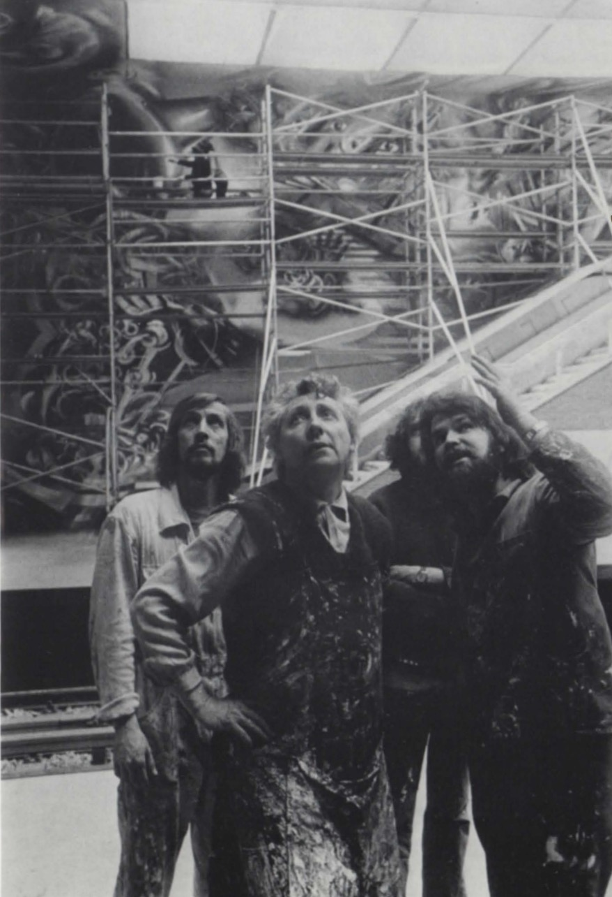
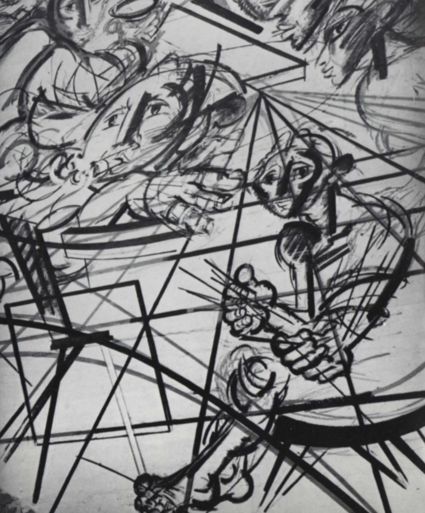
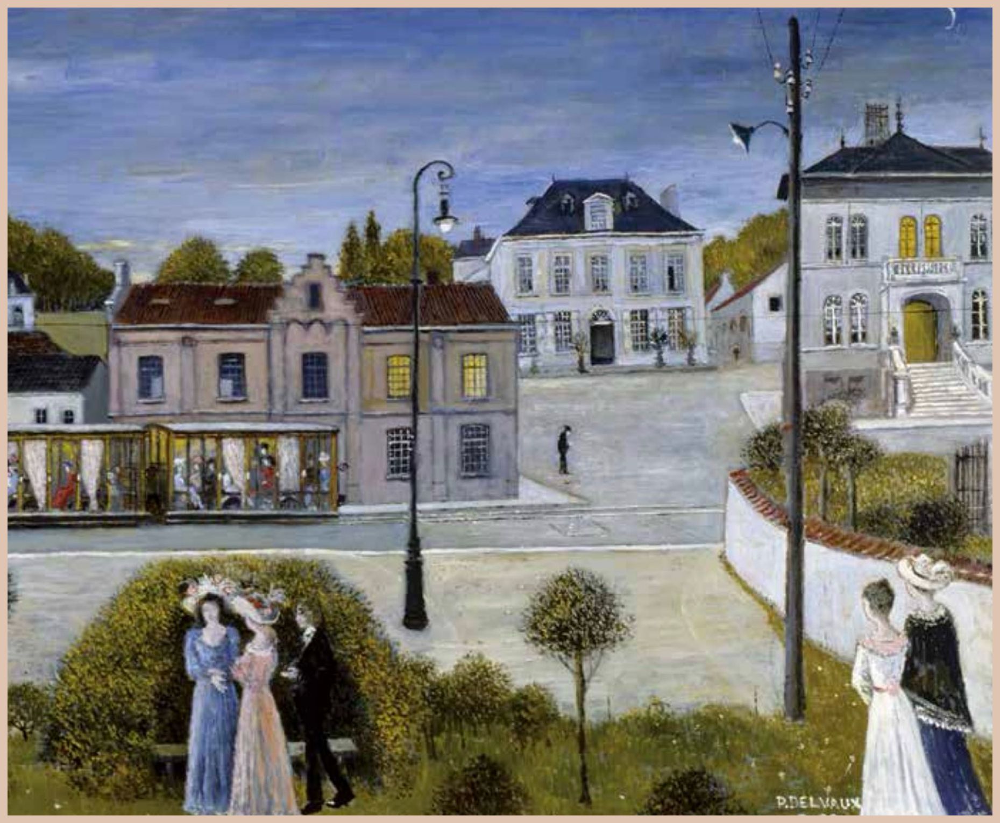
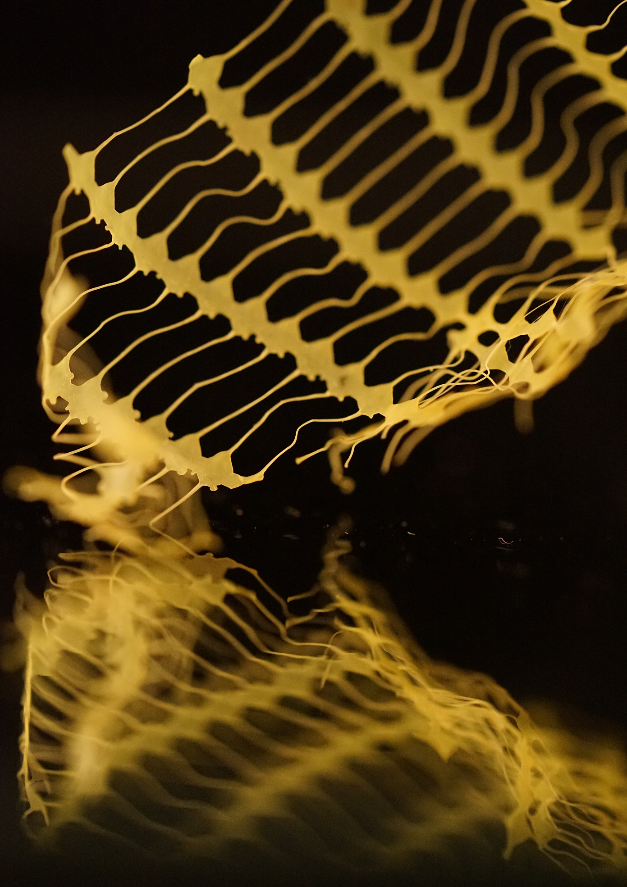
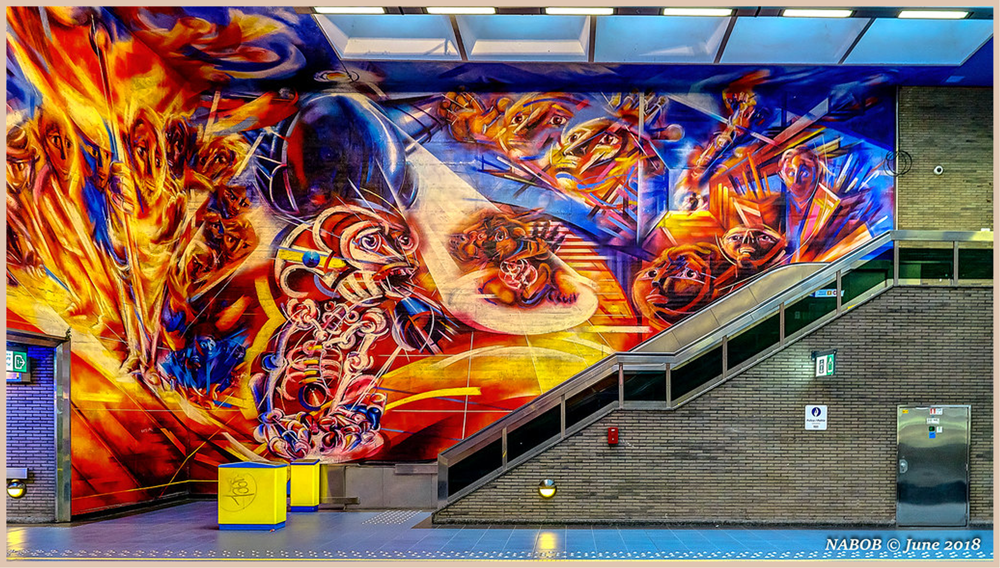
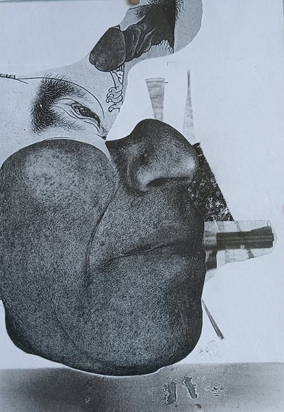
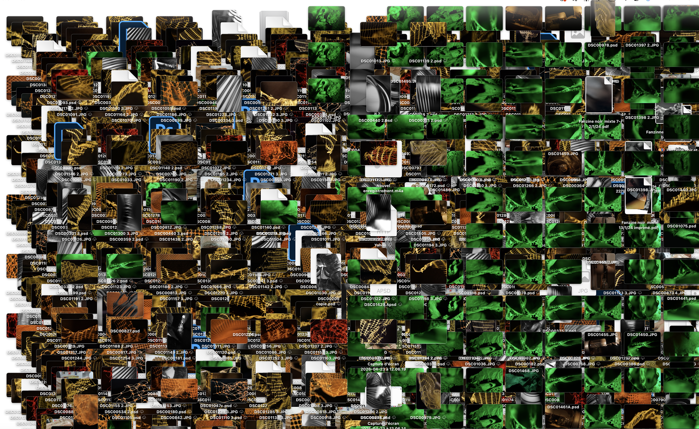
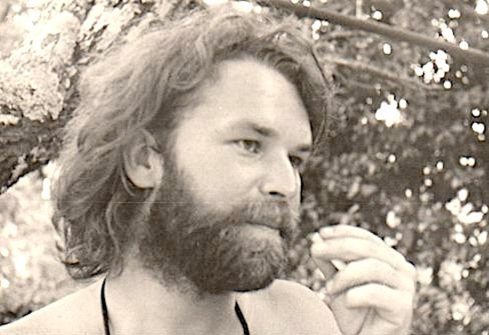
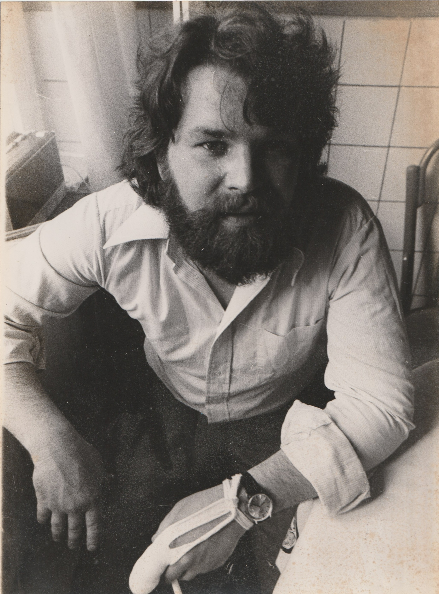

Peter Schuppisser

Peintre, dessinateur, professeur. Une vie d’atelier menée à Watermael-Boitsfort, traversée par une rencontre fondatrice avec Paul Delvaux et trente-cinq années passées à transmettre le geste à l’Académie.
- 45 années d’atelier et de carrière
- 35+ années d’enseignement à l’Académie
- BE Bruxelles · Watermael-Boitsfort
Une biographie en filigrane
Peter Schuppisser est un peintre belge dont la trajectoire se confond, presque entièrement, avec un seul lieu : l’Académie des Beaux-Arts de Watermael-Boitsfort. Il y entre comme élève et n’en partira que pour y revenir, des décennies durant, comme professeur.
Formé dans le sillage de Roger Somville, il appartient à la génération du collectif Art Public — celle qui pense que le peintre doit savoir occuper le mur autant que la toile, et qu’une œuvre vaut aussi par les espaces partagés qu’elle traverse. Très tôt, il pratique avec la même attention le dessin, la peinture et la recherche d’art graphique.
Dès le milieu des années 1970, encore élève, il fait partie de l’équipe rassemblée autour de Somville pour le grand mural Notre Temps, à la station Hankar du métro bruxellois (1974–1976) : 600 m², deux ans et demi de chantier, une commande de la STIB.
En 1982, à trente-et-un ans, il est appelé, avec Xavier Crols et Jacques Defrang, à transposer un tableau de Paul Delvaux en une toile monumentale destinée au foyer du tout nouveau Centre culturel Paul Delvaux. Cette commande, menée plusieurs semaines sous le regard du peintre lui-même, restera l’un des récits fondateurs de sa pratique.
Pendant plus de trente-cinq ans, il enseignera la peinture, le dessin et la recherche d’art graphique à l’Académie de Watermael-Boitsfort — précisément le bâtiment qu’il avait jadis peint, jeune homme, au centre de la fresque Delvaux.
Grandes dates
Une trajectoire en six jalons, entre l’atelier, la commune et la salle de classe.
-
1951
Naissance
Peter Schuppisser naît en 1951. Il a trente-et-un ans lorsque s’ouvre, en 1982, le chantier de la fresque Delvaux, au seuil d’une vie d’atelier et d’enseignement.
-
Années 1970
Académie de Boitsfort, dans le sillage de Somville
Élève à l’Académie des Beaux-Arts de Watermael-Boitsfort, alors dirigée par Roger Somville. Il rejoint le collectif Art Public, dont Somville est cofondateur — un engagement esthétique et civique pour l’art dans l’espace partagé.
-
1974 — 1976
Hankar — Notre Temps, avec Somville
Pendant deux ans et demi, Peter Schuppisser participe, dans l’équipe de Roger Somville, au chantier du grand mural Notre Temps à la station Hankar du métro bruxellois. 600 m², 300 dessins préparatoires, commande de la STIB. Une école de la grande échelle, du collectif et de l’art dans l’espace public.
-
1982
La commande Delvaux
Avec Xavier Crols et Jacques Defrang, il transpose un tableau de Paul Delvaux en une toile monumentale pour le foyer du tout nouveau Centre culturel Paul Delvaux. Le travail se déroule dans un local prêté par la commune ; chaque soir, la maquette signée par le peintre est confiée au commissariat voisin. Visites de Delvaux à Boitsfort et Saint-Idesbald.
-
Années 1980
Le retour à l’Académie, comme professeur
Il devient professeur de peinture, de dessin et de recherche d’art graphique à l’Académie de Watermael-Boitsfort. Le bâtiment qu’il avait peint au centre de la fresque devient son atelier d’enseignement quotidien.
-
1980 — 2010s
Trente-cinq ans de transmission
Pendant plus de trois décennies, plusieurs générations d’élèves passent par ses cours. Une pédagogie ancrée dans le dessin patient, la recherche, et la fidélité au lieu.
-
2019
Témoignage, retraite
Près de quarante ans après la fresque, retraité, il revient sur l’épisode Delvaux dans un entretien recueilli à Watermael-Boitsfort. Le récit qui suit en est issu.
Hankar — Notre Temps
Bruxelles, 1974 – 1976. À la station Hankar du métro, 600 m² de mural, deux ans et demi de chantier, 300 dessins préparatoires. Peter Schuppisser fait partie de l’équipe rassemblée autour de Roger Somville.


Le 30 juillet 1976, après deux ans et demi de chantier, Roger Somville achève à la station Hankar le grand mural Notre Temps. Une commande rare de la STIB : 600 m² de peinture, 300 dessins préparatoires, et toute une équipe à pied d’œuvre.
Peter Schuppisser, alors jeune élève de l’Académie de Boitsfort, fait partie des peintres réunis autour du maître. Six ans avant le chantier Delvaux, il découvre déjà ce que veut dire occuper le mur — à grande échelle, en équipe, dans un espace public traversé chaque jour par des milliers de regards.
« L’art mural n’est pas la décoration d’un mur, d’un « panneau ». »
— Roger Somville, à propos de Notre Temps, 1976
L’épisode Delvaux
Watermael-Boitsfort, 1982 — une commande monumentale, trois jeunes peintres, et la voix tranquille du maître.

À trente-et-un ans, Peter Schuppisser est appelé avec Xavier Crols et Jacques Defrang à transposer un Delvaux en une toile monumentale, pour le foyer du Centre culturel naissant.
La commande émane de Roger Somville, leur ancien professeur, alors directeur de l’Académie de Boitsfort et fondateur du collectif Art Public. Pendant plusieurs semaines, dans un local prêté par la commune, les trois jeunes peintres travaillent le soir, après leur journée. Tous les soirs, ils rapportent la précieuse maquette, signée Delvaux, au commissariat voisin.
Delvaux passe régulièrement vérifier l’avancement : il s’en dit chaque fois satisfait. Aucune discussion sur le thème — seuls comptent les couleurs, les pinceaux, le geste. Les échanges, dans son atelier de Boitsfort comme à Saint-Idesbald, sont d’une grande simplicité.
Le procédé
- Toile Synthétique, robuste, peu réparable, préparée d’un fond gris taupe sombre.
- Méthode Clair sur sombre. Lignes horizontales reportées, dessin préparatoire au crayon blanc gras.
- Geste Touches fines à l’huile, au pinceau très fin — loin du grand aplat à la brosse ou au pistolet.
- Documentation Un livre de costumes pour les habits, le buis observé une feuille à la fois, les essieux des trams fournis par Delvaux.
La palette dictée par Delvaux
- Bleu cobalt
- Rouge anglais
- Jaune citron
- Noir ivoire
- Vert émeraude
Cinq couleurs, et un peu de vert émeraude « parfois ». Le reste se déduit, par mélange et patience.
Au centre de la composition, l’Académie de Boitsfort. « Elle l’a échappé belle, l’académie, on voulait la démolir ! Roger Somville s’est beaucoup battu pour la préserver… » Peter Schuppisser y enseignera plus de trente-cinq ans. Le bâtiment qu’il avait peint, jeune homme, au cœur de la fresque, deviendra son lieu quotidien.
Œuvres & environs
Six images choisies — l’atelier, l’archive, la peinture publique et la documentation visuelle qui environne l’œuvre.





Portraits d’archive
Trois lumières, un même regard — Bruxelles, fin des années 1970, à l’époque même de la fresque Delvaux.


« Vous devriez commencer par le ciel. »
— Paul Delvaux, à Peter Schuppisser, Xavier Crols et Jacques Defrang · Watermael-Boitsfort, 1982
Prendre contact
Atelier / archives
Watermael-Boitsfort
Bruxelles, Belgique
Courriel
Lieux liés
Académie des Beaux-Arts de Watermael-Boitsfort
Centre culturel Paul Delvaux